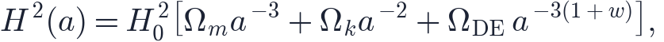
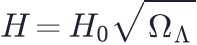
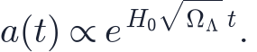
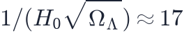
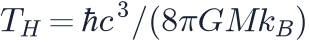
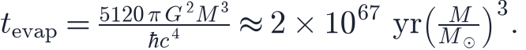
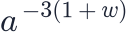
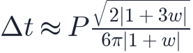

In this lesson you will learn
|
Predicting the future with one equation
Everything this course has said about the past came from the Friedmann equation (L2.3). Run it forwards instead of backwards and it tells you the future. Today the expansion rate is set by

and as  grows the matter term fades as
grows the matter term fades as  . Whatever happens next is decided by
the last term: the dark energy and its
equation of state
. Whatever happens next is decided by
the last term: the dark energy and its
equation of state  .
.
There are only three kinds of answer:
- Expansion for ever, ever more slowly, if there is no dark energy and the universe is not closed.
- Recollapse into a Big Crunch, if gravity wins: too much matter, or a dark energy that is negative.
- Accelerating expansion for ever, if the dark energy is positive and
 — and inside this case, a sharp split at
— and inside this case, a sharp split at  .
.
Try it: The Far Future Choose "Matter only", then "Negative dark energy", then "Our universe". Watch the Expansion tab: three completely different futures from the same equation. |
Our future: exponential expansion
The best fit to today's data is a cosmological constant:
 and a density that never changes. Once matter has thinned out, the
Friedmann equation becomes
and a density that never changes. Once matter has thinned out, the
Friedmann equation becomes

, a constant, and
Distances grow by a factor  every
every

billion years, and then byA horizon that closes in Exponential expansion creates a cosmological event horizon (L2.6): a distance beyond which light sent today can never arrive. It lies about 16.7 billion light years away. Everything farther than that is already out of reach for ever — about 95% of the galaxies we can see. We still see them, because their old light is still arriving, but a message sent to them now would never get there. |
Galaxies do not cross the horizon in a flash. Their light is redshifted more and more, and dimmed, until they fade from view. In about 100–150 billion years every galaxy outside the Local Group — the gravitationally bound group of the Milky Way, Andromeda and about fifty smaller galaxies — will be gone.
Cosmologists with nothing to observe Lawrence Krauss and Robert Scherrer pointed out in 2007 that astronomers living in the merged Local Group a trillion years from now would see a single galaxy surrounded by darkness. The Hubble expansion, the cosmic microwave background (stretched beyond detection) and even the primordial helium (diluted by generations of stars) would all be gone. They would have every reason to conclude that their galaxy was the whole, static universe — and they would be wrong. |
How the lights go out
The expansion only sets the stage. The stars, galaxies and black holes have their own clocks, and they run on a time scale that makes the present age of the universe look like a rounding error. With times counted from today, and good to an order of magnitude at best:
| When | What happens |
|---|---|
| 5 × 10⁹ years | The Sun becomes a red giant; the Milky Way and Andromeda probably merge |
| 10¹¹–10¹² years | Only the Local Group is visible; the CMB can no longer be detected |
| 10¹⁴ years | Star formation ends; the smallest red dwarfs go out |
| 10¹⁹ years | Galaxies evaporate: dead stars are flung out or fall into the central black hole |
| > 10³⁴ years | Protons decay, if they decay at all |
| 10⁶⁷–10¹⁰⁰ years | Black holes evaporate by Hawking radiation |
The end state has a name: the heat death. Not a high temperature, but the end of every temperature difference. Without differences, nothing can happen that would count as an event, let alone a thought.
Hawking evaporation A black hole of mass  (L6.9) and loses mass until it is gone. Integrating the Stefan–Boltzmann law over its shrinking surface gives the lifetime The is what stretches the timeline: a 10¹¹ M☉ black hole takes 10³³ times longer than the Sun would. And none of this starts until the CMB has cooled below — until then, every black hole absorbs more than it emits. |
Try it: The Far Future Open "The next 10¹⁰⁰ years". Each tick on the axis is ten times longer than the one before; today sits at the far left. |
The Big Rip
Now let  drop below
drop below  . The dark energy density scales as
. The dark energy density scales as

, and forWhen does it happen? Once matter is negligible, , which integrates to a finite time until . Robert Caldwell, Marc Kamionkowski and Nevin Weinberg (2003) found For |
The rip does not arrive all at once. A bound system comes apart when the phantom energy
inside it overwhelms what holds it together, and Caldwell and colleagues showed that a
system with orbital period  lasts until roughly
lasts until roughly

before the end. For  : galaxy clusters disappear a billion years before the
rip, the Milky Way 60 million years before, the Solar System three months before, the
Earth about half an hour before, and atoms
: galaxy clusters disappear a billion years before the
rip, the Milky Way 60 million years before, the Solar System three months before, the
Earth about half an hour before, and atoms  seconds before.
seconds before.
Try it: The Far Future Choose "Phantom energy, w = −1.5" and open the Big Rip countdown. Then drag w slowly towards −1 and watch the end run away from you. |
Bound systems do not expand today It is tempting to think that the expansion is already stretching the Solar System a little. It is not. With a cosmological constant, a bound system settles into a size that stays fixed for ever; the correction is utterly negligible. Only phantom energy, whose density keeps growing, can break a bound system. |
Which future is ours?
The observations say (Planck with supernovae and BAO). That is consistent with a cosmological constant — and with a slightly phantom value, and with a slightly quintessence-like one. The heat death and the Big Rip are both allowed; what the data do rule out is a Big Rip within the next few tens of billions of years.
An evolving w The DESI results of 2024–25 prefer, at about 3σ, a dark energy that was phantom in the
past and is quintessence-like today, with |
Remember this
|